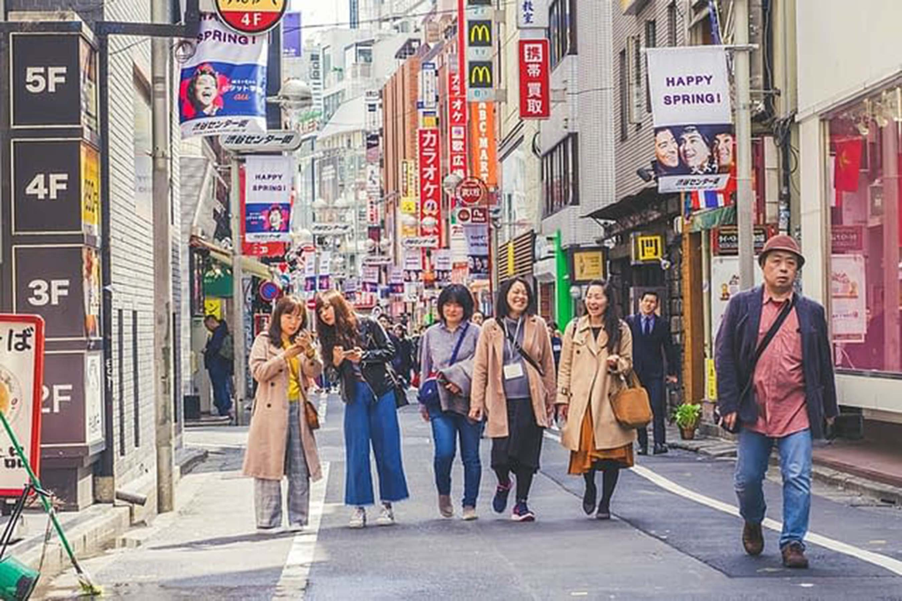
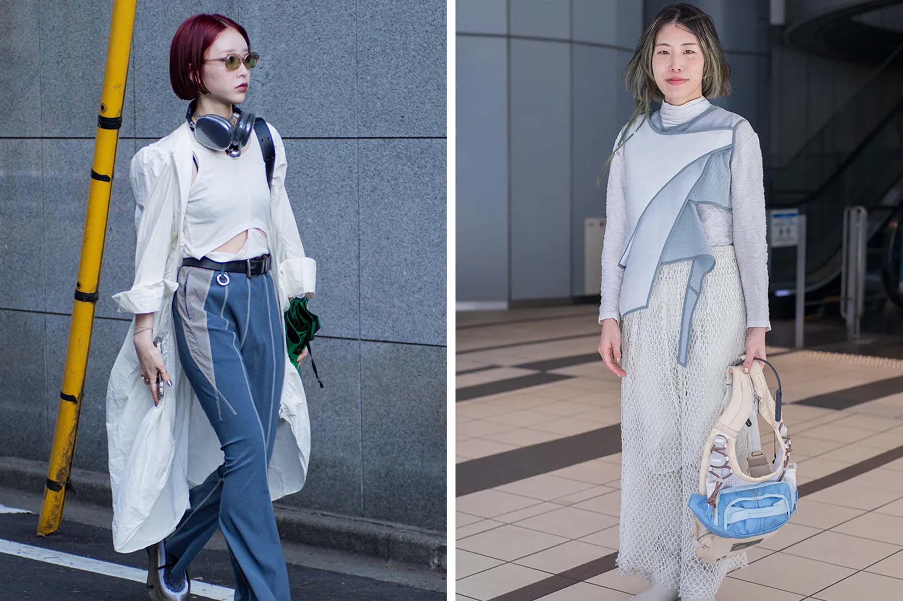
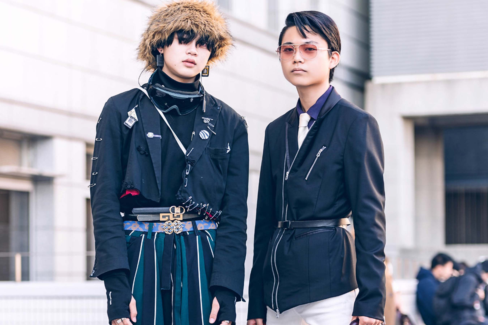
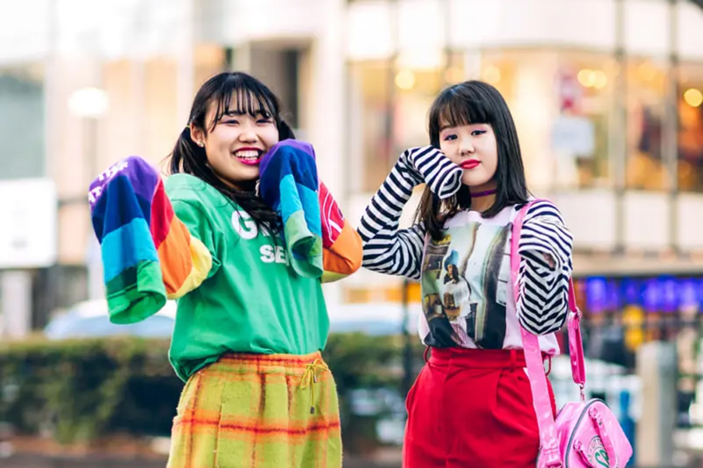
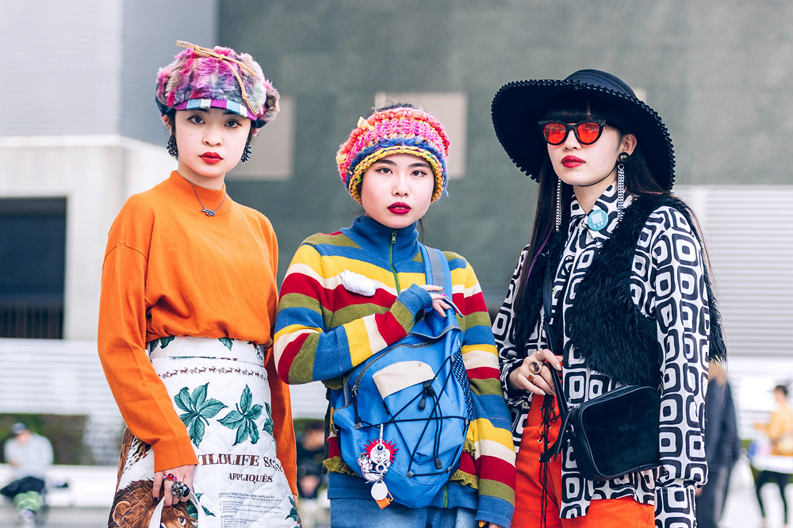
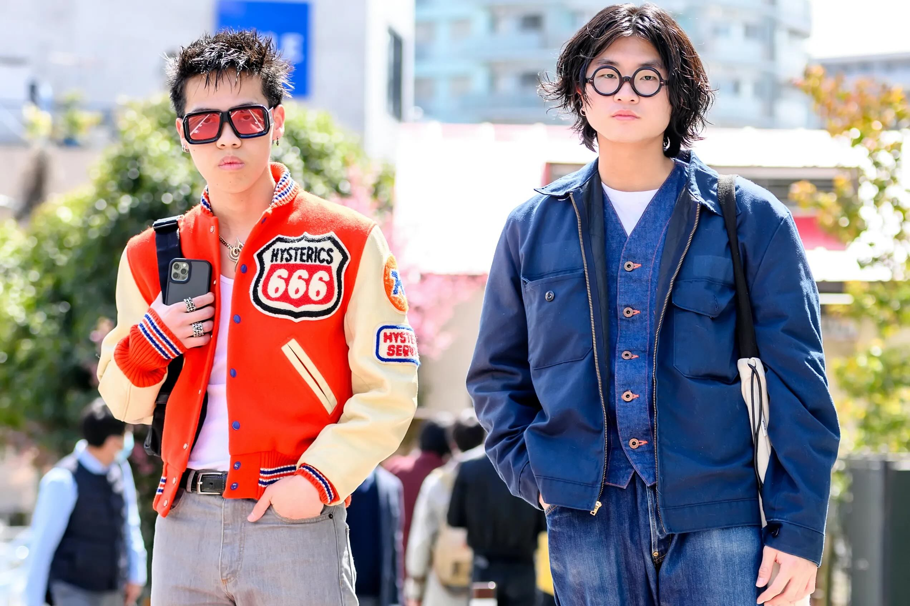
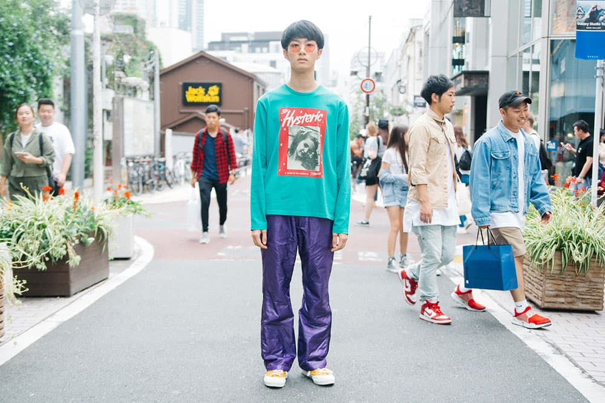

Everyday fashion.

Celebrity fashion for everday.

Dark street fashion by young adults.

Colorful, fun street fashion.

Chilly, subversive fashion.Modern, strong fashion for the night.

Bright, youthful fashion for students.

Simple, color-focused fashion.